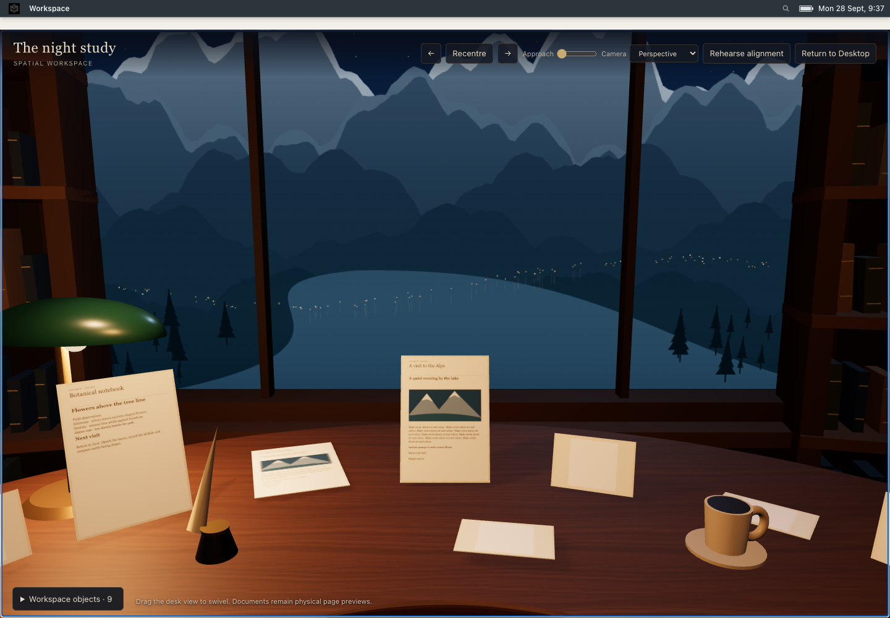
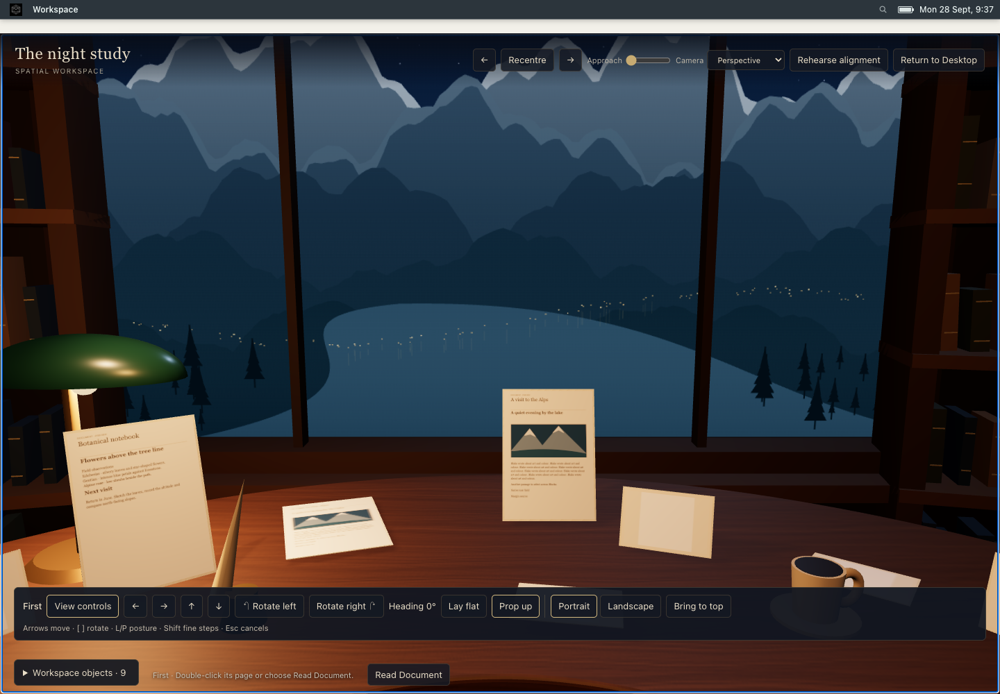
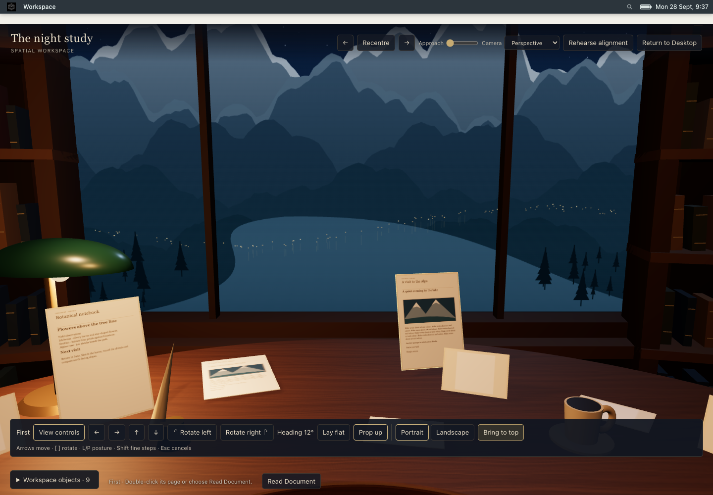
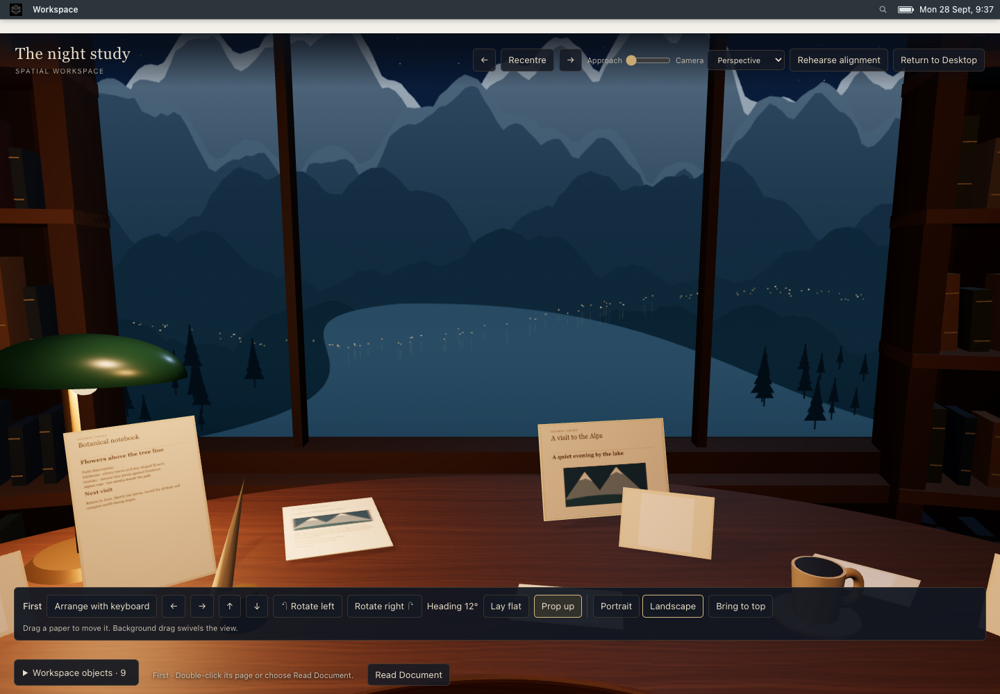
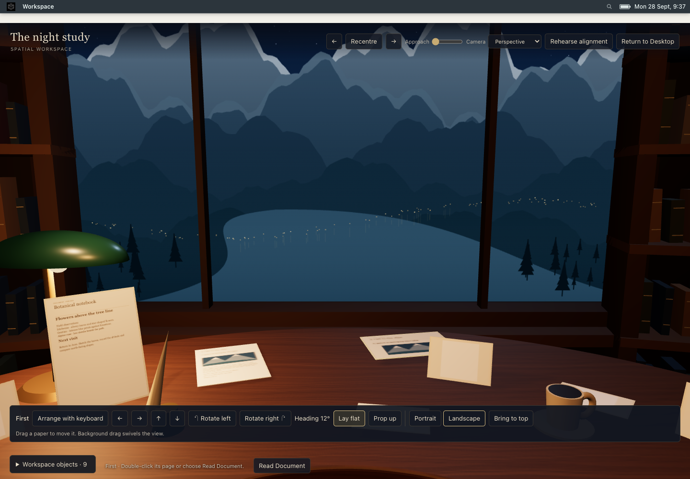
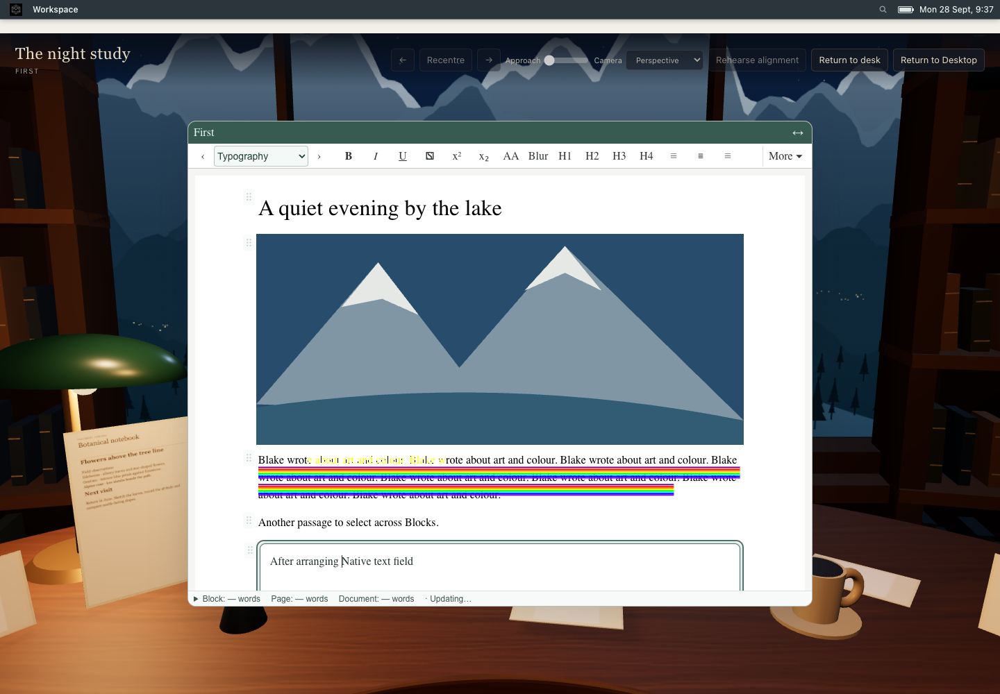
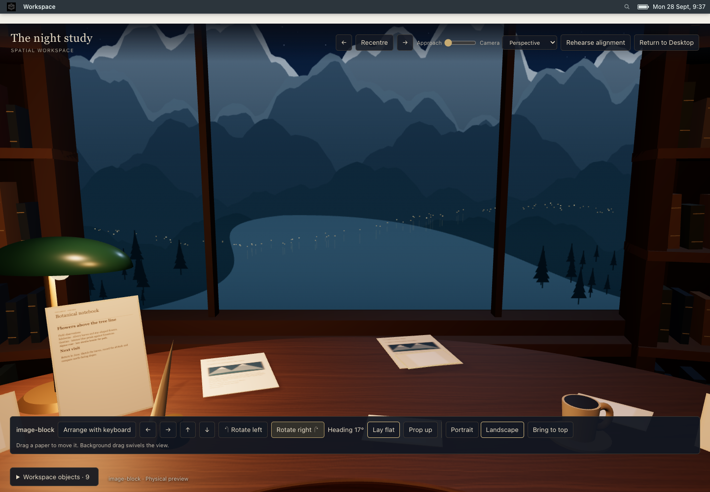

Implementation report · 53 D browser checks · 69 B regression checks
Static procedural wood, paper and Alpine depth. No new room navigation, animation or hidden editors. All captures are Chrome at 1440 × 1000; physical desk and page scales remain unchanged.
The accepted C startup path failed to subscribe to preview changes: its scene frame count stayed unchanged throughout 100 moves. Once subscribed, a second RAF queue imposed an additional frame of delay. D publishes transient placement immediately and leaves render coalescing to the existing scene RAF.
| Instrumented path | Median to render submission | p95 |
|---|---|---|
| Subscription fixed; two RAF stages | 17.9 ms | 18.8 ms |
| One RAF; before D visual changes | 1.4 ms | 2.4 ms |
| Final D | 1.6 ms | 2.3 ms |
These are event/CPU submission measurements, not GPU/compositor or human mouse-to-screen latency. A separate perspective example showed 38.1 px of cursor slip from projecting a propped grab onto the floor; a plane through the grabbed point removes that geometric error before desk clamping.
Manual review: select a paper; drag slowly and quickly; cancel with Escape; use Rotate left/right (Shift-click for fine rotation), Portrait/Landscape and Lay flat/Prop up. Read Document, type, and Return to desk. Check that the page returns to exactly its saved position and the preview refreshes.







Accepted C gallery · The fixtures and arrangements differ; use this for compositional reference rather than pixel subtraction.